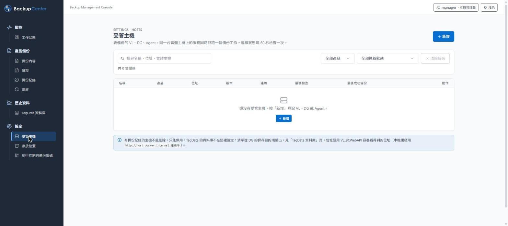

受管主機
登記要備份的 VL、DG、Agent。備份中心每 60 秒檢查一次連線與版本；同一台實體主機上的服務同時只跑一個備份工作。
查看受管主機清單

- 用搜尋框找名稱、位址或實體主機；用下拉篩選產品與連線狀態。
- 按「最後成功備份」的時間可以跳到該主機的備份紀錄。
知道每台主機能不能備份、上次成功是什麼時候。
失敗時先查
- 清單是空的：按「新增」登記主機（下一節）。
登記 VL、DG、Agent
- 產品
- VisoLink（VL）、DataGateway（DG）或 DG-Agent；儲存後不能改。
- 名稱
- 在備份中心顯示的名稱，例如「示範廠 VL」。
- 位址
- 備份中心連得到的產品位址，格式
http://主機:連接埠。 - 實體主機
- 這個服務所在的機器名稱；同一台實體主機的服務依序備份。
- Backup API Token（VL）
- 在 VL 後台建立的 Backup API Token。
- 管理金鑰（DG／Agent）
- DG 或 Agent 安裝時設定的管理金鑰。
- 按「新增」。
- 選「產品」，填「名稱」「位址」「實體主機」。
- 在憑證欄貼上該產品的 Backup API Token 或管理金鑰（向系統管理員取得，不要寫在文件或訊息裡）。
- 按「測試連線」，看到「正常」與回應時間。
- 按「儲存」。依序登記 VL、DG 與 Agent。
清單出現這台主機，連線顯示「正常」並帶出產品版本。
失敗時先查
- 「連不到」：位址要用備份中心伺服器連得到的位址與連接埠，確認防火牆。
- 「憑證錯誤」：Token 或管理金鑰錯誤，或 VL 的 Token 沒有備份權限。
- 「產品尚未支援備份工作介面」：產品版本太舊，不能選來備份或還原。
連線狀態的意思
- 正常
- 可以備份與還原。
- 連不到
- 位址錯誤、服務沒開或網路不通。
- 憑證錯誤
- Token 或管理金鑰錯誤。
- 產品尚未支援備份工作介面
- 產品版本不支援，不能選來備份或還原。
- 資料類型不一致
- 產品回報的資料類型與備份中心不同，請確認兩邊版本。
- 已停用
- 不檢查連線、不派工。
- 狀態每 60 秒自動更新，「最後檢查」顯示時間。
依狀態決定要修正位址、憑證或產品版本。
編輯、停用與刪除主機
- 按「編輯」修改名稱、位址、實體主機；憑證欄留空表示不變更。
- 勾「停用（不檢查連線、不派工）」暫停這台主機。
- 沒有備份紀錄的主機才能按「刪除」；有備份紀錄的只能停用。
- 按「儲存」。
清單更新；換機後記得在這裡更新位址與憑證。
失敗時先查
- 「刪除」不能按：這台主機有備份紀錄，只能停用。